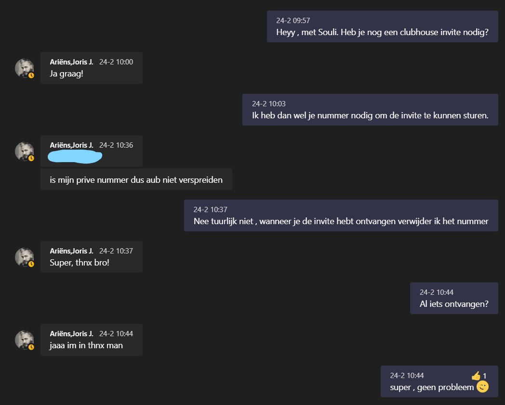
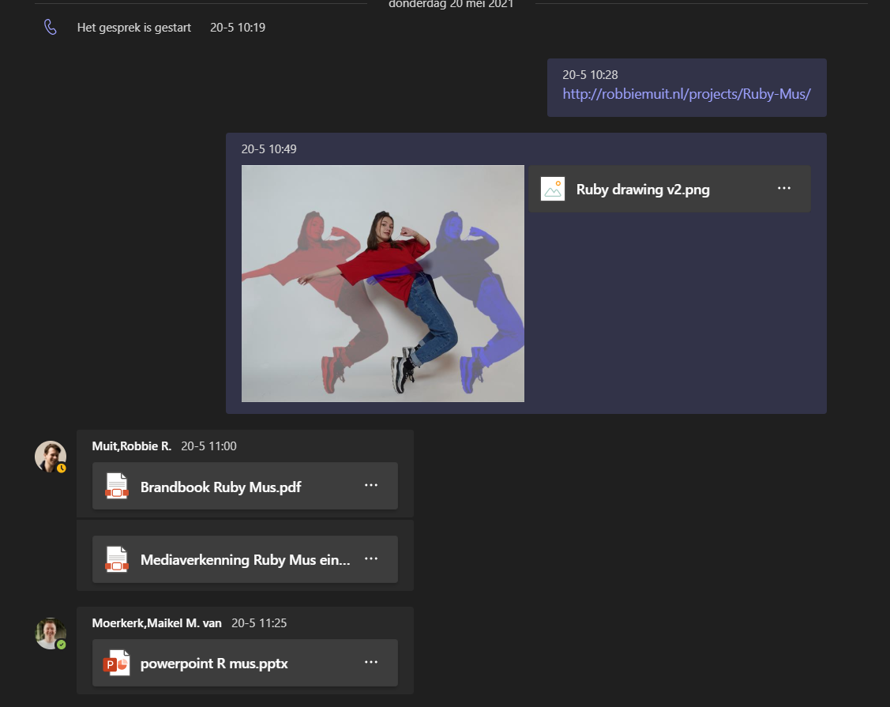

Voor communication heb ik meerdere malen contact gehad met Myrthe. Bij alle opleveringen is alle content gemailt naar Myrthe en is er gevraagd of zij deze ontvangen heeft. Bij het maken van content en de website is er gecommuniceerd naar Myrthe wat ze ervan vond. Daardoor hebben we ook meerdere versies met verbeteringen.
Aan het begin van het semester heb ik goed contact gehad met de docenten. Meerdere en malen feedback gevraagd bij teams meetings. Ook heb ik aan de development docent gevraagd of hij mij door het semester opdrachten kan geven zodat ik ook de aandacht goed besteed aan HTML, CSS en Javascript. Iedere week heb ik met de docent besproken wat ik heb gemaakt en heb ik hier ook feedback van ontvangen. Ook is mijn code nagelopen en hebben we gekeken naar manieren om de code net iets praktischer op te zetten.
Dit is helaas bergafwaarts gegaan. Dit is grotendeels gekomen door de omstandigheden rondom corona. Ik zat niet echt lekker in mijn vel waardoor werk waar je eigenlijk maar een uur voor nodig hebt 3 uur werd. Hierdoor kwam ik in de knoei met mijn proftaak groepje en mijn eigen projecten waardoor ik mijn prioriteit heb gezet op het groepsproject. Na hier commentaar op te hebben ontvangen wilde ik voor sprint X meer nadruk leggen op feedback vragen. Door omstandigheden met mijn laptop ben ik in tijdnood geraakt waardoor ik de docent niet heb kunnen benaderen.
Aan het begin van het semester hebben groepjes opgesteld en een opdrachtgever uitgekozen. Na dat de groepjes zijn opgericht zijn we in teams gaan zitten en verschillende dingen besrpoken. Wij hebben gekeken naar een Trello waar we alle opdrachten inzetten wat we gaan maken , wie daar mee bezig is en wanneer het af is. Ook hebben we een teams chat aangemaakt samen met een Whatsapp groep. In de teams hebben we calls gehouden en bestanden doorgestuurd om feedback te geven. In de Whatapp groep hebben we afspraken gemaakt zoals hoelaat er team meetings werden gehouden tot hoelaat we op school zijn.
Ik heb geleerd hoe je op een professionele wijze contact opneemt. Denk dan aan opdrachtgevers tot docenten. Ook heb ik geleerd om sneller naar de docenten toe te stappen wanneer er (technische) problemen zijn. Dit had wel wat problemen kunnen voorkomen maar het heeft me ook geleerd beter om te gaan met deze omstandigheden.
Ik had meer feedback moeten vragen zodat de docenten meer hoogte van me krijgen.
Ik ga voortaan wekelijks een gesprek aan met een docent voor feedback. Ook al heb ik niet iets om te laten zien. Hierdoor krijgen docenten meer hoogte van me en krijg ik de feedback die ik nodig heb om dit te verwerken in mijn projecten.